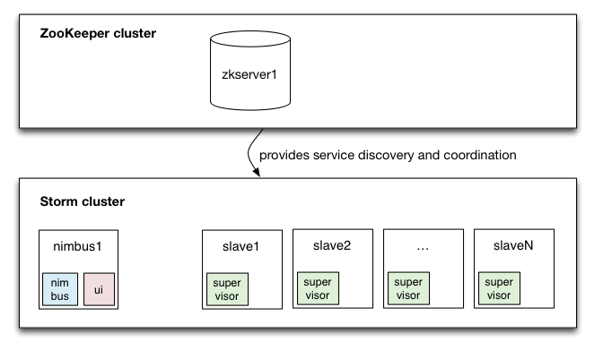

Goals
We would like to see you leave today
- Understanding Storm
- Understanding Trident
- Having written a Storm Topology
- Having written code to analyse the 1% Twitter sample in Real-Time
Content
- What is Storm?
- Motivations
- Core Concepts
- Architecture
- Low-level API
- Trident
- Your First Trident Topology
Getting Setup (Required)
Please use the hashtag '#stratastorm' on Twitter
Note that: if you have a twitter account, you can use the OAuthTool to get your own credentials to access the 1% sample stream. You can add these to your twitter4j.properties (by copying the twitter4j.properties.template file in the git repo. As we will be turning off our Kafka queue of tweets after this tutorial.
Advanced Setup (Optional)
- Use a VirtualBox VM we prepared for this worksop
- Or you can install Storm on your own laptop
- ...
Install Storm on OSX 10.9 (Optional)
- Brew install an old version of zero_mq, version 2.1.7
- Install gcc4.2 from Apple and use it to compile jzmq
- Make sure that you have the Java Header files required to build jzmq
- Install 'java for os x 2013-005 Developer Package' from the Apple Developer Portal
- git clone https://github.com/nathanmarz/jzmq.git using gcc4.2
- Configure a zookeeper cluster by copying the default conf file to zoo.cfg
- Grab 0.9.0-rc2 from the Storm Project
- If you have problems installing jzmq you can try
user$ git clone https://github.com/nathanmarz/jzmq.git
user$ cd jzmq
user$ ./autogen.sh
user$ ./configure
user$ touch src/classdist_noinst.stamp
user$ cd src
user$ CLASSPATH=.:./.:$CLASSPATH javac -d . org/zeromq/ZMQ.java org/zeromq/ZMQException.java org/zeromq/ZMQQueue.java org/zeromq/ZMQForwarder.java org/zeromq/ZMQStreamer.java
user$ cd ..
user$ make
user$ sudo make install
Configure Storm, by creating a storm.yaml file with the following:
storm.zookeeper.servers:
- "127.0.0.1"
storm.local.dir: "/tmp/storm"
nimbus.host: "127.0.0.1"
supervisor.slots.ports:
- 6700
- 6701
- 6702
- 6703
And then finally you can run Storm like so
user$ $ZOOKEEPER_HOME/bin/zkServer start
user$ $STORM_HOME/bin/storm nimbus &
user$ $STORM_HOME/bin/storm supervisor &
user$ $STORM_HOME/bin/storm ui &
PeerIndex and Storm
- Who we are?
- Start-up, not vendor
- What we do?
- We Measure Influence online
- Influence online Marketing
- Why we used Storm?
- ...
What is Storm?
"Storm is to Real-time what Hadoop is to Batch processing"
- Realtime Stream Processing Framework
- Distributed
- Fault Tolerant
- Open-sourced (Apache Incubator Project)
- JVM based
- Multi language
- Transactional
Motivations - Why use Storm?
Traditionally writing scalable stream based processing suffered from 3 major downfalls
- Tedious: You spend most of your development time configuring where to send messages, deploying workers, and deploying intermediate queues. The realtime processing logic that you care about corresponds to a relatively small percentage of your codebase.
- Brittle: There's little fault-tolerance. You're responsible for keeping each worker and queue up.
- Painful to scale: When the message throughput get too high for a single worker or queue, you need to partition how the data is spread around. You need to reconfigure the other workers to know the new locations to send messages. This introduces moving parts and new pieces that can fail.
source: Storm Wiki Rationale
Further Motivations
- More and more data is being delivered as streams in real-time
- Twitter
- Facebook
- Disqus
- Tumblr
- Storm allows
- Scalable Fault Tolerant Stream Processing
- Distributed RPC
- "Building on the shoulders of Giants"
Use Cases
- Stream processing: Storm was built to process streams of new data whilst updating databases in real-time
- Continuous computation: Storm can do continuous queries whilst being able to stream the results in real-time
- Distributed RPC: Storm can parallelise the computation of intense functions on the fly
Core Concepts

- Topology: Analogous to a Hadoop Job. A topology is a graph of spouts and bolts that are connected with stream groupings.
- Stream: The stream is the core abstraction in Storm. A stream is an unbounded sequence of tuples.
- Spout: A spout is a source of streams in a topology.
- Bolt: All processing in topologies is done in bolts. Bolts can do anything from filtering, functions, aggregations, joins, talking to databases, and more.
- Stream Grouping: Part of defining a topology is specifying for each bolt which streams it should receive as input. A stream grouping defines how that stream should be partitioned among the bolt's tasks.
Architecture

Fault-tolerant & scalable architecture is achieved using:
- Nimbus
- Distributes code within the cluster
- Assigns tasks to the various workers
- Monitors the cluster for failures
- Fail-fast
- Similar to Hadoop's "JobTracker".
- Zookeeper
- Is a service for maintaining configuration information, naming, providing distributed synchronization, and providing group services.
- All state in zookeeper
- Supervisor
- Worker node daemon
- Starts and stops worker processes as per instructions from Nimbus
- Fail-fast
- Similar to Hadoop's "TaskTracker".
Multi-node Storm Cluster

- Illustration of what the minimal storm cluster looks like
- Zookeeper running on machines
- One supervisor running for worker node
- One instance of Nimbus and the Storm UI
source: Michael Noll
Important Architectural Notes
- Transactional Processing
- In order to exploit Trident's transactional capabilities one needs to employ a queueing system that supports transactions. The most used aforementioned type of system is the Apache's Kafka.
- Persistant State
- Can we used to store intermediate results or the final results of your computation.
- People tend to use KeyValue stores such as Memcache, Redis, etc
Trident
- High-level abstraction for dealing with streams
- What Pig, Hive, or Cascading are to Hadoop
- Compiles down to the Low-Level Storm API (like Pig, Hive, etc)
- Transactions
- Concepts
- Grouping
- Filters
- Functions
- Aggregations
- Joins
- ...
Distributed RPC

- Coordinates receiving an RPC request with the cluster.
- From the client's POV a distributed RPC call looks just like a regular RPC call.
- Can be used to issue adhoc queries to running topologies
Acknowledgements
- Nathan
- Storm London Meetup
- ...
Now on to the Actual Tutorial :)
{kind=link}